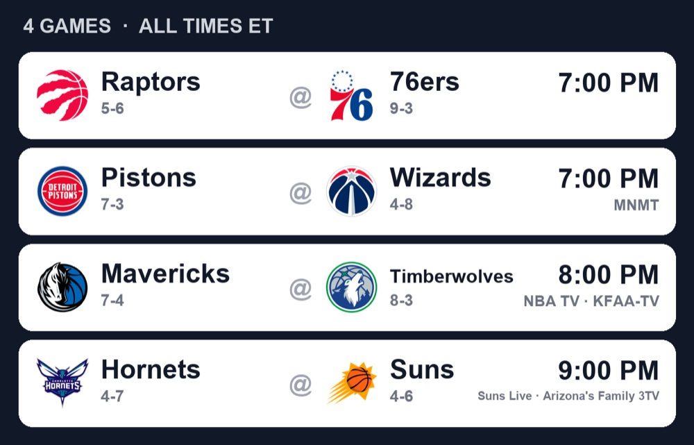
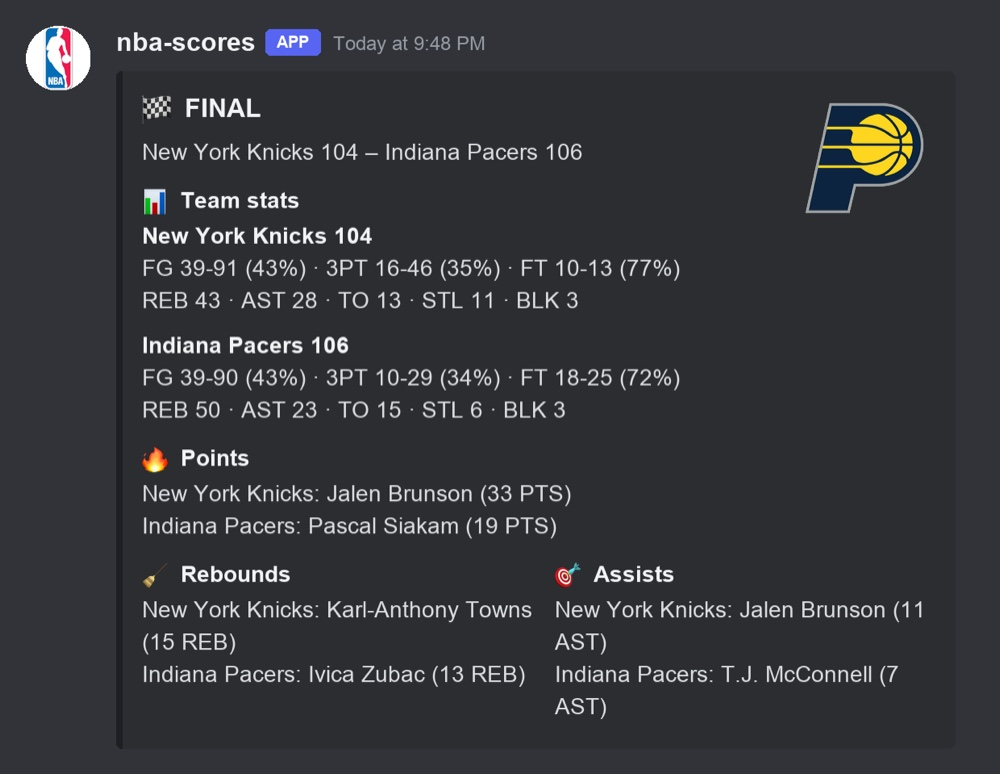

06 · Feb 2026 – now
NBA Score Bot
A Discord bot that posts the day's NBA schedule, each final score and a nightly recap, using ESPN's public API. It runs entirely on GitHub Actions, so there's no server to host.


What it does
- Daily schedule. At 9:00 AM Pacific on game days, an image with every matchup: team logos, records, tip-off times and TV channels.
- Final scores. When each game ends, the score, the winner's logo, team stats, and each team's leaders in points, rebounds and assists.
- Nightly recap. After the last game, every final score plus the night's top performers in points, rebounds, assists, blocks and steals.
How it's built
- No server. A GitHub Actions workflow starts a run a few times a day. Each run stays alive for up to about five and a half hours, and starts a fresh one to take over if games are still going when its time runs out.
- Few requests. It first checks a game about 2 hours 15 minutes after tip-off, roughly how long a game lasts, then every 5 minutes until it's final. Between checks the run sleeps.
- Nothing posted twice. What has been posted is saved in a state file that each run commits back to the repo. A final is never posted for a game that tipped off more than 12 hours ago.
- A drawn schedule card. The schedule is an image built with Pillow. If the bot isn't allowed to attach files, it falls back to a plain-text schedule.